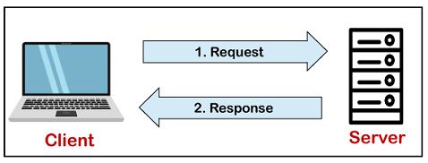

MySQL tutorial provides basic and advanced concepts of MySQL. Our MySQL tutorial is designed for beginners and professionals.
MySQL is a relational database management system based on the Structured Query Language, which is the popular language for accessing and managing the records in the database. MySQL is open-source and free software under the GNU license. It is supported by Oracle Company.
Our MySQL tutorial includes all topics of MySQL database that provides for how to manage database and to manipulate data with the help of various SQL queries. These queries are: insert records, update records, delete records, select records, create tables, drop tables, etc. There are also given MySQL interview questions to help you better understand the MySQL database.
MySQL is currently the most popular database management system software used for managing the relational database. It is open-source database software, which is supported by Oracle Company. It is fast, scalable, and easy to use database management system in comparison with Microsoft SQL Server and Oracle Database. It is commonly used in conjunction with PHP scripts for creating powerful and dynamic server-side or web-based enterprise applications.
It is developed, marketed, and supported by MySQL AB, a Swedish company, and written in C programming language and C++ programming language. The official pronunciation of MySQL is not the My Sequel; it is My Ess Que Ell. However, you can pronounce it in your way. Many small and big companies use MySQL. MySQL supports many Operating Systems like Windows, Linux, MacOS, etc. with C, C++, and Java languages.
MySQL is a Relational Database Management System (RDBMS) software that provides many things, which are as follows:
MySQL follows the working of Client-Server Architecture. This model is designed for the end-users called clients to access the resources from a central computer known as a server using network services. Here, the clients make requests through a graphical user interface (GUI), and the server will give the desired output as soon as the instructions are matched. The process of MySQL environment is the same as the client-server model.
The project of MySQL was started in 1979 when MySQL's inventor Michael Widenius developed an in-house database tool called UNIREG for managing databases. After that, UNIREG has been rewritten in several different languages and extended to handle big databases. After some time, Michael Widenius contacted David Hughes, the author of mSQL, to see if Hughes would be interested in connecting mSQL to UNIREG's B+ ISAM handler to provide indexing to mSQL. That's the way MySQL came into existence.